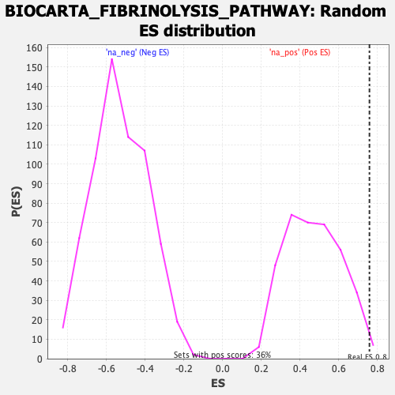

| | | Dataset | DE_genes2 |
| Phenotype | NoPhenotypeAvailable |
| Upregulated in class | na_pos |
| GeneSet | BIOCARTA_FIBRINOLYSIS_PATHWAY |
| Enrichment Score (ES) | 0.75968695 |
| Normalized Enrichment Score (NES) | 1.6195451 |
| Nominal p-value | 0.016483517 |
| FDR q-value | 0.18720217 |
| FWER p-Value | 0.884 |
Table: GSEA Results Summary
 Fig 1: Enrichment plot: BIOCARTA_FIBRINOLYSIS_PATHWAY
Fig 1: Enrichment plot: BIOCARTA_FIBRINOLYSIS_PATHWAY
Profile of the Running ES Score & Positions of GeneSet Members on the Rank Ordered List
| PROBE | GENE SYMBOL | GENE_TITLE | RANK IN GENE LIST | RANK METRIC SCORE | RUNNING ES | CORE ENRICHMENT | | 1 | PLAU | | | 0 | 25.881 | 0.7120 | Yes |
| 2 | SERPINE1 | | | 681 | 3.229 | 0.7597 | Yes |
| 3 | SERPINB2 | | | 3370 | 1.049 | 0.6259 | No |
| 4 | PLAT | | | 5946 | 0.356 | 0.4799 | No |
| 5 | F2R | | | 11869 | -1.161 | 0.1534 | No |
| 6 | F2 | | | 13416 | -2.034 | 0.1158 | No |
| 7 | F13A1 | | | 14144 | -2.640 | 0.1444 | No |
Table: GSEA details [plain text format]

Fig 2: BIOCARTA_FIBRINOLYSIS_PATHWAY: Random ES distribution
Gene set null distribution of ES for BIOCARTA_FIBRINOLYSIS_PATHWAY